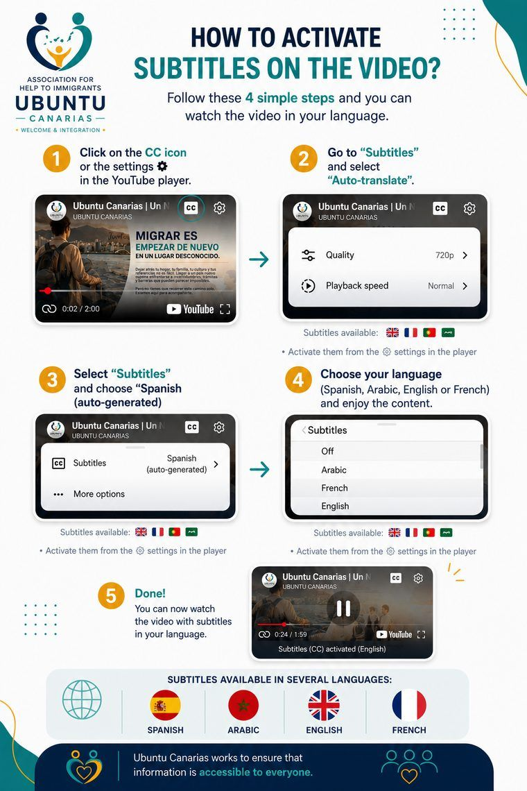

Mission
To support migrants and their families through their social, employment and community integration process in the Canary Islands, offering guidance, training and psychosocial support that respects their autonomy and dignity.
We believe in dignified, participatory and transformative integration.
For us, integration isn't a formality settled with a piece of paper or a contract, but a process built day by day, alongside the person and at their own pace. That's why we combine practical guidance — legal, employment, training — with psychosocial support that recognises what each person brings with them: their history, their capabilities and their right to decide over their own life. We work so that the person who arrives is not simply a recipient of help, but an active protagonist of their own process, and so that the host society is also transformed along the way, learning to see migration as an opportunity rather than a problem to be managed.

Subtitles available: 


 · Turn them on from the settings icon in the player
· Turn them on from the settings icon in the player

Ubuntu Canarias was born from the meeting of people who, from different backgrounds and paths, share one conviction: that welcome and integration are built by standing beside people, not from offices detached from the reality of those who arrive.
The association was formed in Las Palmas de Gran Canaria, driven by four founding members, as a direct response to the needs the team witnessed, listened to and worked with over years of social work, employment guidance and psychosocial support for migrants across the archipelago.
We are beginning to build a network with organisations, public bodies and citizens, with a will to grow without ever losing the closeness and listening we were born from.
To support migrants and their families through their social, employment and community integration process in the Canary Islands, offering guidance, training and psychosocial support that respects their autonomy and dignity.
A Canarian society where migration is understood as an opportunity for mutual enrichment, and where every person, whatever their origin, has real access to build their own life project.
We act with rigour and accountability towards the people we support, our partner organisations and Canarian society as a whole.
Ubuntu Canarias is governed by a Board of Directors elected by the Assembly of members, responsible for ensuring compliance with our Statutes and the proper use of the association's resources.
We believe trust is built by openly showing who we are, how we are organised and where our funds come from. That's why our legal and governance information is available to anyone.
I founded Ubuntu Canarias to build the project I always dreamed of: supporting migrants from lived experience, not just theory.


We listen without judgement to understand each story and respond to real needs.

We walk alongside each person, encouraging their autonomy and their own decisions.

We value cultural diversity as a richness that builds more humane communities.
We act with honesty and accountability, answering to people and to society.

We collaborate with organisations, public administrations and citizens to multiply our impact.
No one arrives alone. No one integrates alone. We do it together, with respect and hope.
A diverse, committed and close-knit team.
We work alongside Casa África, public institutions and West African bodies for a comprehensive and human approach to migration flows.